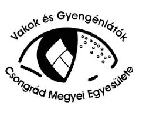
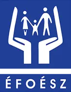

Partnereink
A SZEFO Közhasznú Nonprofit Zrt. szakmai kapcsolatot ápol a fogyatékossággal élő és megváltozott munkaképességű emberek érdekvédelmét ellátó országos és megyei szervezetekkel. Ezek a partnerségek szakmai háttértudást, tapasztalati szakértelmet és érzékenyítést nyújtanak munkavállalóink befogadó, esélyegyenlőségen alapuló foglalkoztatásához.
SINOSZ – Siketek és Nagyothallók Országos Szövetsége
Weboldal megnyitásaMEOSZ – Mozgáskorlátozottak Egyesületeinek Országos Szövetsége
Weboldal megnyitása